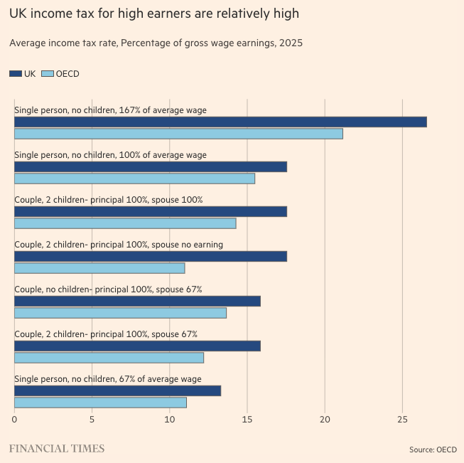

Portfolio for the Automated Data Visualisation Class (PP434) at LSE (Autumn Term, 2026/2027)
This is a chart on inflation. Chart from Richard Davies Economist Github Chart Library Data Source: OECD
This is an interesting chart on how official inflation is measured. Chart from Richard Davies Economist Github Chart Library Data Source: CPIH
Created through the Economics Observatory Data Hub
Created through the Economics Observatory Data Hub
Policy Debate: Should the UK government have lifted the two-child limit for Universal Credit?
The UK government recently scrapped the two-child limit on Universal Credit on April 6, 2026, which was in place from April 2017 Source: Save the Children.

Changes made
- Swapped the x and y axis to more clearly show the different levels of income tax.
- Changed the colour to red to better reflect that this is a cost to households
- Added axis labels and percentages.
- Also included the values (estimated) above each bar for better readability
API task and Scraper Task
Base URL: https://collectionapi.metmuseum.org/public/collection/v1.1/search
Parameters used: departmentId=18 (18 is for musical instruments), dateBegin, dateEnd, and limit = 1
No key was required, and the url returned the JSON of {total, objectIDs}. It is not tidy and I only used total.
Originally, I hoped to also include ObjectName (which indicates the type of each instruments), but the category of 'other' overwhelmed all the others, which made the visualisation less interesting. In the end, I thought it was best to focus on the key takeaway: that almost half of the musical instruments at the Met were made in the 19th century.
- Scraped data from Wikipedia on predicted apocalyptic events and created a tidy dataset, grouping the events into 4 different categories based on specific words
- A key challenge was cleaning the data (standardising text cells using regex and dates which had different formats), and making of events based on specific key words, to create a clean csv file with year, claimants, description, year, decade (to group events by decade for clearer visualisation), and type
Colab Notebook can be found here